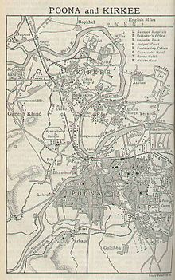
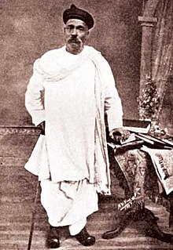

HISTORY & CULTURE OF PUNE
Early and Medieval period
 The first reference to Pune region is found in two copper plates dated 758 and 768 AD,issued and ruled by Rashtrakuta dynasty. The plates are known as "Puny Vishaya" and "Punaka Vishaya" respectively. The Pataleshwar rock-cut temple complex was built during this era. Pune later became part of the Yadava Empire of Deogiri from 9th century. It was called as "Punekavadi" and "Punevadi". In 2003, an anciental discovery of artefacts from the Satvahana period in the Kasba peth area of the city has put the origin of settled life in the area to around 200 BC.
The Khalji dynasty overthrew the Yadavas in 1317. The Khalji dynasty was succeeded by another Delhi sultanate dynasty, the Tughlaqs. A governor of the Tughlaq for the Deccan revolted and created the independent Brahmani sultanate. The Deccan sultanate ruled for Pune region between 1400 and early 1600s. During the Islamic era, the city was called "Kasabe Pune". During this period, the Muslims lived within the town walls, on the eastern bank of Mutha River. The Brahmins, traders, and cultivators were pushed outside the town walls. Under the Brahmani and early Nizamshahi, towards the end of 15th century, Pune became a center for learning of Sanskrit scriptures.
Maratha Rule
 Pune first came under Maratha control in the early 1600s. However, control shifted between the Bhosale
family,
the Adil Shah dynasty, and the Mughals, for most of the century. In the early 1700s, Pune and its
surrounding
areas were granted to the newly appointed Maratha Peshwa, Balaji Vishwanath. It remained with his family
until
his great-grandson Bajirao.
Pune first came under Maratha control in the early 1600s. However, control shifted between the Bhosale
family,
the Adil Shah dynasty, and the Mughals, for most of the century. In the early 1700s, Pune and its
surrounding
areas were granted to the newly appointed Maratha Peshwa, Balaji Vishwanath. It remained with his family
until
his great-grandson Bajirao.
Bhosale Family fiedom(1599-1714)
In 1595 or 1599, Maloji Bhosale, the grandfather of Shivaji, was given the title of "raja" by Bahadur Nizam Shah. On the recommendation of Nizam's Vazir, Malik Ambar, Maloji was granted the jagir(fiedom) of the Pune and Supe parganas, along with the control over the Shivneri and Chakan forts.
In 1630-31, Murar Jagdeo Pandit, a general of Adil Shahi of Bijapur attacked Pune and razed it to the ground by using ass-drawn ploughs, as a symbol of total dominamce. Soon afterwards, Shahaji, the son of Maloji, joined the service of Adil Shahi, and got his family's jagir of Pune back in 1637. Shahaji also selected Pune for the residence of his wife, Jijabai and son, Shivaji, the future founder of the Maratha Empire. The construction of a palace, called Lal Mahal, was completed in 1640. Jijabai is said to have commissioned the building of the Kasba Ganpati temple herself. Pune changed hands between the Mughals and the Marathas many times during the rest of the century. It remained under Shivaji's control for the most part of his career. Recognizing the military potential of Pune, the Mughal general Shaista Kan and later, the emperor Aurangeb further developed the areas around the city.
Peshwa Rule(1714-1818)
In 1714, the Maratha ruler Shahu appointed Balaji Vishwanath, a Chitpavan Brahmin, as his Peshwa. In 1720, Baji Rao was appointed Peshwa, as a successor to his father, by Shahu. Bajirao moved his administration from Saswad to Pune in 1728, and in the process, laod the foundation for turning what was a kasbah into a large city. Bajirao also started construction of a palace called Shaniwar Wada on the eastern bank of the Mutha River. The city of "savakars" gained further importance under the rule of Bajirao's son, alaji Baji Rao, also known as Nanasaheb. After the disastrous Battle of Panipat in 1761, Maratha influenced was curtailed. At this time, the Nizam of Hyderabad looted the city. The leading role in this was played by Raghunathrao, the younger brothe of Nanasaheb who wanted power at the expense of his nephews, Madhavrao and Narayanrao. For most part, the Peshwa rule saw the city elites coming from the Chitpavan Brahmin community. They were the military commanders, the bureucrats, and the bankers, and had ties to each other through matrimonial alliances.
Under Peshwa rule, law and order was exercised by the office of Kotwal. The Kotwal was both the police chief, magistrate, as well as the municipal commissioner. The salary of the Kotwal was as high as 9000 rupees a month, but that included the expense of employing officers, mainly from the Ramoshi castte. The most famous Kotwal of Pune during Peshwa rule was Ghashiram Kotwal. The Peshwa's influence in India declined after the defeat of Maratha forces in the Battle of Panipat, but Pune remained the seat of power. The city's fortunes declined rapidly after the accession of Bajirao to power 1795. In 1802, Pune was captured by the Yashwantrao Holkar in the Battle of Poona, directly precipitating the seconf Anglo-Maratha War of 1803-1805. The Peshwa rule ended with the defeat of Bajirao by the British East Company, under the leadership of Mountstaurt Elphinstone, in 1818.
British Rule
 In 1818, Pune and rest of the Peshwa territories came under the control of the British East India Company. The company rule came to an end when in 1858, under the terms of Proclamation issued by Queen Victoria, the Bombay Presidency, along with Pune and the rest of British India, came under the direct rule of the British crown.
City Development
British rule over more thn a century, and built a large military cantonment to the east of the city. Due to its milder weather, the city became the "Monsoon Capital" of the Governor of Bombay, thus making it one of the most important cities of the Bombay Presidency. The old city had narrow lanes and areas segregated by caste and religion. For many decades, Pune was the center of social reform and at the turn of the century, the center of Indian Nationalism. The population of the city was previously decreasing with the declining fortunes of the Peshwa rule. The population at the beginning of British rule was estimated at around 100,000 and in the 1851 census, the population of the old-city ws down to 70,000. The population increased subsequently following the introduction of railways, to 80,000 in 1864, 90,000 in 1872, and 100,000 in 1881.
The Poona Municipality was established in 1858. For most of the British era, Pune remained a poor cousin of Mumbai when it came to industrialization. There were however, a few industrial concerns active at the turn of the 20th century, such as paper mill, metal forge works, and a cotton mill. In the early years of British rule, an open-air vegetable market used to be held outside the Shaniwar Wada. This shifted to an indoor place built by the Poona Municipality, which was inaugrated in 1886. The Pune-Miraj line was completed in 1886 and the completion of Metre-gauge Miraj line turned the city into an important railway junction. The city was a post-distribution hub for the district. There were two post offices in the city which offered money order and savings bank services.
Center of Social Reform and Nationalism
The city was an important centre of social and religious reform movements, as well as the nationalist movement of the late 19th and the early 20th centuries. Notable civil-societies founded or active in the city during 19th century include the Poona Sarvajanik Sabha, the Prarthana Samaj, the Arya Mahila Samaj, and the Satya Shodhak Samaj. The Sabha is considered the forerunner of the Indian National Congress, established in 1885. Two of the most prominent personalities of the Indian Nationalism in the late 19th and early 20th century, Gopal Krishna Gokhale, Bal Gangadhar Tilak, who were on opposite sides of the political spectrum, called Pune their home. Both Keshavrao Jedhe and Baburao Javalkar belonged to the Non-Brahmin party, capturing the Ganpati and Shivaji festivals from Brahmin domination were their early goals. Later on in 1930s, Jedhe merged the non-Brahmin party with the Congress party, and transformed the party from an upper-caste dominated body to a more broadly based, but also Maratha-dominated party in Pune and other parts of Maharashtra. Mahatma Gandhi was imprisoned several times at Yerwada Central Jail. The historic Poona Pact, between B.R.Ambedkar and Gandhi on reserved seats for the untouchable castes, was signed in 1932. Gandhi was placed under house arrest at the Aga Khan Palace in 1942-44, where both his wife, and side aide Mahadev Desai died.
Culture
The social reformers and nationalist leaders in the city were greatly aided by the availability of the printing presses. The Chitrashala press and the Aryabhushan press of Vishnu Shastri Chiplunkar, were the notable printing presses based in Pune in the 19th century. The first Marathi newspaper published from the city were Mitrodaya in 1844 and Dnayanprakash in 1849. After ideological differences with Tilak,Agarkar left Kesari and started his own reformist paper, Sudharak. In the early 20th century, a number of newspapers were established or had a special Pune edition. Prabhat in the 1940s, wa the first one anna newspaper that catered to te lower income classes. The Sakal started by Nanasaheb Parulekar in 1931 is the most popular Marathi daily in the city to this day.
During the lengthy period of British rule, many different forms of entertainment became popular and subsequently faded in Pune. In the 1840s, plays based on stories from Hindu epics such as Ramayana and Mahabharat were made popular by the travelling troupesof Vishnudas Bhave. For the next forty years, plays by the travelling and performances in tents or even private dwellings wee extremely popular among the Marathi speaking population of the city. The Marathi musical theater of the later period was built on the foundation of the travelling theater. Another art form popular in this era was Lavani and Tamasha, danced and performed at the Aryabhushan theater.The city was a pioneer in the movie business with companies like Prabhat studios producing quality movies. The first movie theater in Pune was called Arya Theater. After the advent of talkies in the 1930s, the word(talkies) was used to denote a cinema hall. Most of the early halls had western names, such as Minerva, Globe, Liberty, etc.